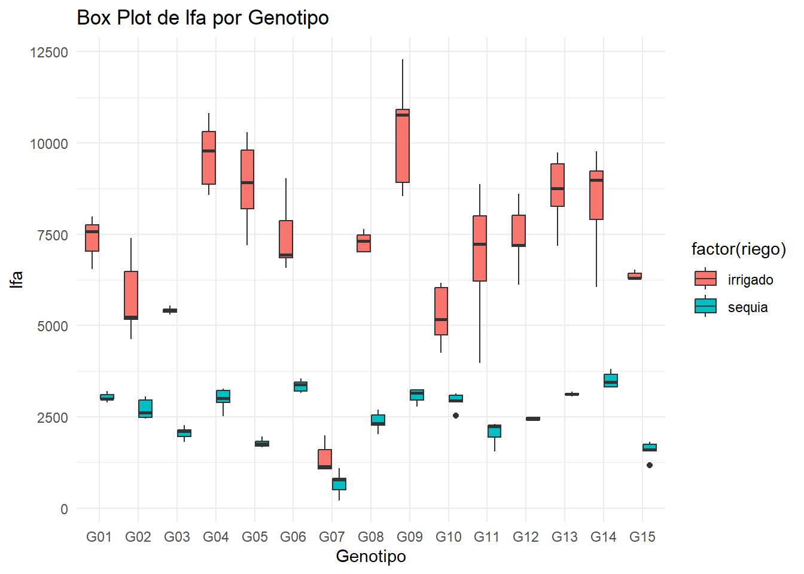
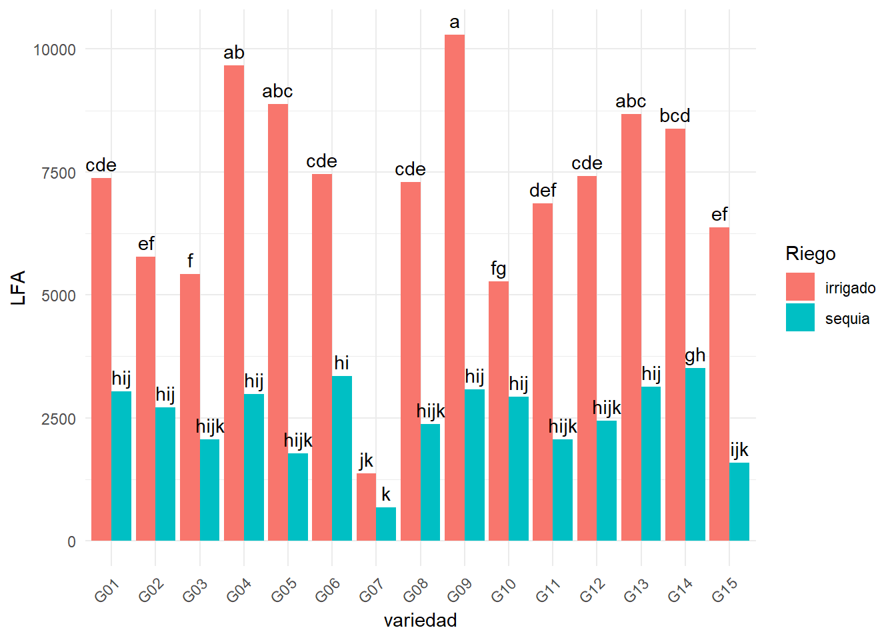
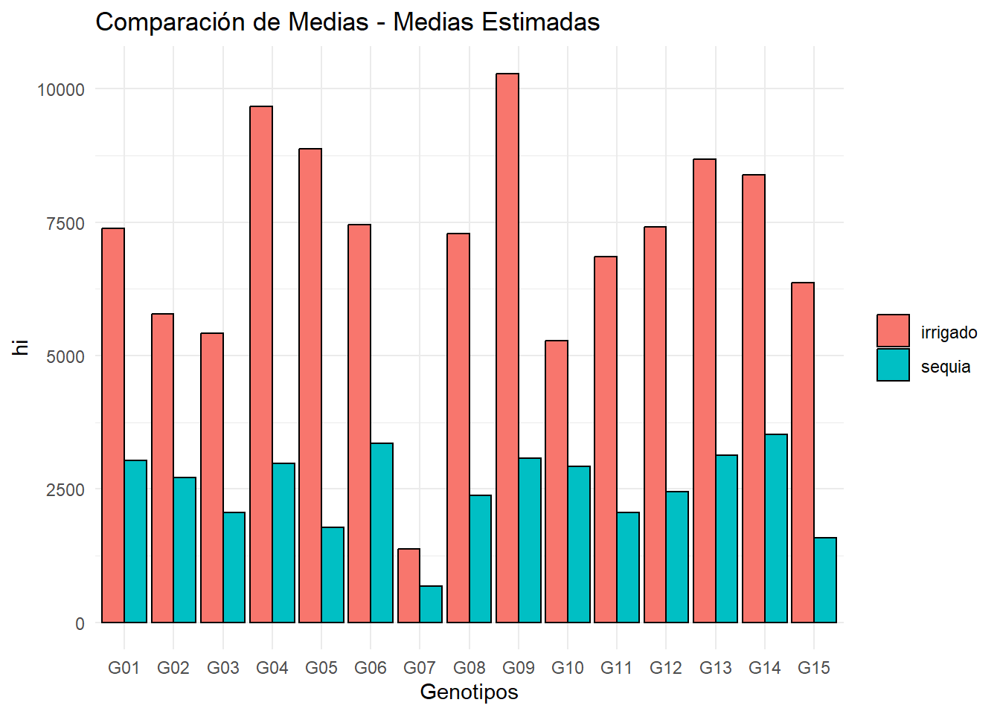

1 + 1[1] 2Quarto enables you to weave together content and executable code into a finished document. To learn more about Quarto see https://quarto.org.
When you click the Render button a document will be generated that includes both content and the output of embedded code. You can embed code like this:
1 + 1[1] 2You can add options to executable code like this
[1] 4The echo: false option disables the printing of code (only output is displayed).
#Analisis datos
##Importar data
library(readxl)
data <- read_excel("LA MOLINA 2014 POTATO WUE (FB).xlsx" , sheet = 2)
head(data)# A tibble: 6 × 18
riego geno block bloque spad_29 spad_83 rwc_84 op_84 leafdw stemdw rootdw
<chr> <chr> <dbl> <chr> <dbl> <dbl> <dbl> <dbl> <dbl> <dbl> <dbl>
1 sequia G01 2 II 56.3 41.1 61.5 -2.43 13.3 14.9 3.83
2 sequia G02 4 IV 52.7 47.9 63.2 -3.03 9.42 8.63 2.1
3 irrigado G01 3 III 49.2 41.6 67.7 -2.5 18.2 24.2 3.16
4 sequia G02 1 I 55.5 44.2 64.9 -2.4 8.84 6.58 2
5 irrigado G03 2 II 58.2 32.6 74.5 -2.27 14.6 12.6 1.83
6 irrigado G04 5 V 43.5 37.8 74.0 -2.37 19.8 17.5 2.83
# ℹ 7 more variables: tubdw <dbl>, biomdw <dbl>, hi <dbl>, ttrans <dbl>,
# wue <dbl>, twue <dbl>, lfa <dbl>#modelo lineal
modelo <- lm(formula = lfa ~ block + geno + riego +riego*geno, data = data)
anova(modelo)Analysis of Variance Table
Response: lfa
Df Sum Sq Mean Sq F value Pr(>F)
block 1 1147402 1147402 2.0661 0.1532
geno 14 261729564 18694969 33.6640 <2e-16 ***
riego 1 788556926 788556926 1419.9535 <2e-16 ***
geno:riego 14 108147972 7724855 13.9101 <2e-16 ***
Residuals 119 66085454 555340
---
Signif. codes: 0 '***' 0.001 '**' 0.01 '*' 0.05 '.' 0.1 ' ' 1#instalar blox polt
library (ggplot2)#grafico con blox plot
ggplot(data, aes(x = factor(geno), y = lfa, fill = factor(riego))) +
geom_boxplot() +
labs(title = "Box Plot de lfa por Genotipo", x = "Genotipo", y = "lfa") +
theme_minimal()
Comparacion de medias
library(agricolae)Warning: package 'agricolae' was built under R version 4.4.2# Test de Tukey para el factor riego
tukey_riego <- HSD.test(modelo, "riego", group = TRUE)
print (tukey_riego)$statistics
MSerror Df Mean CV MSD
555339.9 119 4806.708 15.50357 240.9633
$parameters
test name.t ntr StudentizedRange alpha
Tukey riego 2 2.800284 0.05
$means
lfa std r se Min Max Q25 Q50
irrigado 7099.533 2303.6007 75 86.04959 1065.26 12296.22 6080.475 7194.26
sequia 2513.883 774.8039 75 86.04959 216.31 3811.99 1994.430 2550.51
Q75
irrigado 8676.890
sequia 3128.035
$comparison
NULL
$groups
lfa groups
irrigado 7099.533 a
sequia 2513.883 b
attr(,"class")
[1] "group"# Test de Tukey para el factor geno
tukey_geno <- HSD.test(modelo, "geno", group = TRUE)
print(tukey_geno)$statistics
MSerror Df Mean CV MSD
555339.9 119 4806.708 15.50357 1154.422
$parameters
test name.t ntr StudentizedRange alpha
Tukey geno 15 4.898749 0.05
$means
lfa std r se Min Max Q25 Q50
G01 5208.740 2320.6396 10 235.6565 2900.00 7982.73 3024.7450 4871.780
G02 4248.306 1790.4189 10 235.6565 2449.59 7392.38 2705.6825 3847.175
G03 3737.911 1774.7220 10 235.6565 1811.97 5545.69 2117.7075 3790.125
G04 6323.822 3587.6820 10 235.6565 2511.13 10811.84 3062.3600 5916.390
G05 5331.217 3829.9284 10 235.6565 1657.64 10291.06 1784.2150 4586.715
G06 5401.719 2269.6009 10 235.6565 3159.54 9040.06 3398.7600 5063.420
G07 1027.445 508.7517 10 235.6565 216.31 1989.25 789.4375 1067.115
G08 4830.225 2602.1631 10 235.6565 2021.37 7643.80 2377.4100 4847.965
G09 6680.517 3942.2332 10 235.6565 2781.32 12296.22 3171.2750 5885.975
G10 4097.996 1361.9488 10 235.6565 2541.12 6164.24 2979.7125 3692.625
G11 4458.646 2830.2282 10 235.6565 1556.38 8867.09 2246.9750 3133.820
G12 4931.831 2694.8614 10 235.6565 2400.00 8603.78 2449.2350 4299.605
G13 5899.240 3000.7027 10 235.6565 3062.34 9743.70 3126.5475 5186.380
G14 5949.235 2751.9205 10 235.6565 3318.36 9776.01 3503.4825 4930.755
G15 3973.766 2529.1790 10 235.6565 1176.63 6522.46 1638.2950 4042.420
Q75
G01 7443.612
G02 5215.847
G03 5401.852
G04 9560.083
G05 8732.257
G06 6918.457
G07 1129.532
G08 7235.692
G09 10304.727
G10 5064.198
G11 6971.368
G12 7186.702
G13 8626.745
G14 8707.917
G15 6304.358
$comparison
NULL
$groups
lfa groups
G09 6680.517 a
G04 6323.822 ab
G14 5949.235 abc
G13 5899.240 abc
G06 5401.719 bcd
G05 5331.217 bcd
G01 5208.740 bcde
G12 4931.831 cdef
G08 4830.225 cdefg
G11 4458.646 defg
G02 4248.306 defg
G10 4097.996 efg
G15 3973.766 fg
G03 3737.911 g
G07 1027.445 h
attr(,"class")
[1] "group"# Test de Tukey para la interacción riego:geno
tukey_interaccion <- HSD.test(modelo,c("riego", "geno"), group = TRUE)
print(tukey_interaccion)$statistics
MSerror Df Mean CV MSD
555339.9 119 4806.708 15.50357 1811.22
$parameters
test name.t ntr StudentizedRange alpha
Tukey riego:geno 30 5.434716 0.05
$means
lfa std r se Min Max Q25 Q50
irrigado:G01 7377.892 583.61443 5 333.2686 6539.86 7982.73 7038.08 7578.79
irrigado:G02 5779.562 1127.71742 5 333.2686 4631.00 7392.38 5162.74 5233.55
irrigado:G03 5416.770 89.80871 5 333.2686 5305.77 5545.69 5369.88 5412.51
irrigado:G04 9668.932 945.94448 5 333.2686 8569.08 10811.84 8867.03 9791.10
irrigado:G05 8878.756 1235.57574 5 333.2686 7205.94 10291.06 8189.67 8913.12
irrigado:G06 7455.364 1009.33982 5 333.2686 6576.65 9040.06 6857.13 6938.90
irrigado:G07 1374.156 411.10652 5 333.2686 1065.26 1989.25 1068.97 1140.05
irrigado:G08 7286.826 282.80318 5 333.2686 6998.00 7643.80 7012.74 7310.01
irrigado:G09 10287.712 1548.81007 5 333.2686 8533.54 12296.22 8924.78 10764.71
irrigado:G10 5271.344 822.34789 5 333.2686 4249.18 6164.24 4743.16 5171.21
irrigado:G11 6854.880 1888.72290 5 333.2686 3966.33 8867.09 6210.41 7225.02
irrigado:G12 7417.258 946.24681 5 333.2686 6111.43 8603.78 7164.03 7194.26
irrigado:G13 8672.380 1015.60193 5 333.2686 7180.79 9743.70 8256.98 8750.00
irrigado:G14 8384.132 1473.21710 5 333.2686 6049.52 9776.01 7895.00 8978.89
irrigado:G15 6367.026 107.45072 5 333.2686 6270.00 6522.46 6302.79 6304.88
sequia:G01 3039.588 115.85242 5 333.2686 2900.00 3203.70 2994.58 2999.66
sequia:G02 2717.050 281.05239 5 333.2686 2449.59 3063.35 2487.28 2618.85
sequia:G03 2059.052 179.44660 5 333.2686 1811.97 2274.48 1953.50 2107.76
sequia:G04 2978.712 302.61678 5 333.2686 2511.13 3263.70 2889.83 3010.27
sequia:G05 1783.678 120.66794 5 333.2686 1657.64 1967.49 1700.00 1771.80
sequia:G06 3348.074 165.94367 5 333.2686 3159.54 3550.19 3198.96 3381.68
sequia:G07 680.734 335.90739 5 333.2686 216.31 1097.98 495.83 782.10
sequia:G08 2373.624 260.99914 5 333.2686 2021.37 2697.93 2278.60 2319.71
sequia:G09 3073.322 198.12400 5 333.2686 2781.32 3238.41 2961.78 3150.00
sequia:G10 2924.648 235.40497 5 333.2686 2541.12 3136.07 2909.10 2940.95
sequia:G11 2062.412 317.51100 5 333.2686 1556.38 2301.31 1942.23 2237.88
sequia:G12 2446.404 37.06811 5 333.2686 2400.00 2487.78 2425.26 2438.98
sequia:G13 3126.100 47.70803 5 333.2686 3062.34 3191.97 3110.00 3120.00
sequia:G14 3514.338 217.30731 5 333.2686 3318.36 3811.99 3326.93 3449.76
sequia:G15 1580.506 248.79682 5 333.2686 1176.63 1814.84 1560.00 1601.06
Q75
irrigado:G01 7750.00
irrigado:G02 6478.14
irrigado:G03 5450.00
irrigado:G04 10305.61
irrigado:G05 9793.99
irrigado:G06 7864.08
irrigado:G07 1607.25
irrigado:G08 7469.58
irrigado:G09 10919.31
irrigado:G10 6028.93
irrigado:G11 8005.55
irrigado:G12 8012.79
irrigado:G13 9430.43
irrigado:G14 9221.24
irrigado:G15 6435.00
sequia:G01 3100.00
sequia:G02 2966.18
sequia:G03 2147.55
sequia:G04 3218.63
sequia:G05 1821.46
sequia:G06 3450.00
sequia:G07 811.45
sequia:G08 2550.51
sequia:G09 3235.10
sequia:G10 3096.00
sequia:G11 2274.26
sequia:G12 2480.00
sequia:G13 3146.19
sequia:G14 3664.65
sequia:G15 1750.00
$comparison
NULL
$groups
lfa groups
irrigado:G09 10287.712 a
irrigado:G04 9668.932 ab
irrigado:G05 8878.756 abc
irrigado:G13 8672.380 abc
irrigado:G14 8384.132 bcd
irrigado:G06 7455.364 cde
irrigado:G12 7417.258 cde
irrigado:G01 7377.892 cde
irrigado:G08 7286.826 cde
irrigado:G11 6854.880 def
irrigado:G15 6367.026 ef
irrigado:G02 5779.562 ef
irrigado:G03 5416.770 f
irrigado:G10 5271.344 fg
sequia:G14 3514.338 gh
sequia:G06 3348.074 hi
sequia:G13 3126.100 hij
sequia:G09 3073.322 hij
sequia:G01 3039.588 hij
sequia:G04 2978.712 hij
sequia:G10 2924.648 hij
sequia:G02 2717.050 hij
sequia:G12 2446.404 hijk
sequia:G08 2373.624 hijk
sequia:G11 2062.412 hijk
sequia:G03 2059.052 hijk
sequia:G05 1783.678 hijk
sequia:G15 1580.506 ijk
irrigado:G07 1374.156 jk
sequia:G07 680.734 k
attr(,"class")
[1] "group"str(tukey_interaccion)List of 5
$ statistics:'data.frame': 1 obs. of 5 variables:
..$ MSerror: num 555340
..$ Df : int 119
..$ Mean : num 4807
..$ CV : num 15.5
..$ MSD : num 1811
$ parameters:'data.frame': 1 obs. of 5 variables:
..$ test : chr "Tukey"
..$ name.t : chr "riego:geno"
..$ ntr : int 30
..$ StudentizedRange: num 5.43
..$ alpha : num 0.05
$ means :'data.frame': 30 obs. of 9 variables:
..$ lfa: num [1:30] 7378 5780 5417 9669 8879 ...
..$ std: num [1:30] 583.6 1127.7 89.8 945.9 1235.6 ...
..$ r : int [1:30] 5 5 5 5 5 5 5 5 5 5 ...
..$ se : num [1:30] 333 333 333 333 333 ...
..$ Min: num [1:30] 6540 4631 5306 8569 7206 ...
..$ Max: num [1:30] 7983 7392 5546 10812 10291 ...
..$ Q25: num [1:30] 7038 5163 5370 8867 8190 ...
..$ Q50: num [1:30] 7579 5234 5413 9791 8913 ...
..$ Q75: num [1:30] 7750 6478 5450 10306 9794 ...
$ comparison: NULL
$ groups :'data.frame': 30 obs. of 2 variables:
..$ lfa : num [1:30] 10288 9669 8879 8672 8384 ...
..$ groups: chr [1:30] "a" "ab" "abc" "abc" ...
- attr(*, "class")= chr "group"library(tidyverse)Warning: package 'readr' was built under R version 4.4.2Warning: package 'dplyr' was built under R version 4.4.2Warning: package 'forcats' was built under R version 4.4.2Warning: package 'lubridate' was built under R version 4.4.2── Attaching core tidyverse packages ──────────────────────── tidyverse 2.0.0 ──
✔ dplyr 1.1.4 ✔ readr 2.1.5
✔ forcats 1.0.0 ✔ stringr 1.5.1
✔ lubridate 1.9.3 ✔ tibble 3.2.1
✔ purrr 1.0.2 ✔ tidyr 1.3.1
── Conflicts ────────────────────────────────────────── tidyverse_conflicts() ──
✖ dplyr::filter() masks stats::filter()
✖ dplyr::lag() masks stats::lag()
ℹ Use the conflicted package (<http://conflicted.r-lib.org/>) to force all conflicts to become errorslibrary(dplyr)
library(tidyr)
library(purrr)
library(stringr)mc <- tukey_interaccion$groups %>%
rownames_to_column("tr at") %>%
separate(`tr at`, c("riego", "geno"))
str(mc)'data.frame': 30 obs. of 4 variables:
$ riego : chr "irrigado" "irrigado" "irrigado" "irrigado" ...
$ geno : chr "G09" "G04" "G05" "G13" ...
$ lfa : num 10288 9669 8879 8672 8384 ...
$ groups: chr "a" "ab" "abc" "abc" ...ggplot(mc, aes(x = geno, y = lfa, fill = riego)) +
geom_bar(stat = "identity", position = position_dodge()) +
geom_text(aes(label = groups), position = position_dodge(0.9), vjust = -0.5) +
labs(x = "variedad", y = "LFA", fill = "Riego") +
theme_minimal() +
theme(axis.text.x = element_text(angle = 45, hjust = 1))
library(emmeans)Warning: package 'emmeans' was built under R version 4.4.2Welcome to emmeans.
Caution: You lose important information if you filter this package's results.
See '? untidy'mc <- emmeans(modelo, ~ riego * geno )
mc riego geno emmean SE df lower.CL upper.CL
irrigado G01 7378 333 119 6718.0 8038
sequia G01 3040 333 119 2379.7 3699
irrigado G02 5780 333 119 5119.7 6439
sequia G02 2717 333 119 2057.1 3377
irrigado G03 5417 333 119 4756.9 6077
sequia G03 2059 333 119 1399.1 2719
irrigado G04 9669 333 119 9009.0 10329
sequia G04 2979 333 119 2318.8 3639
irrigado G05 8879 333 119 8218.9 9539
sequia G05 1784 333 119 1123.8 2444
irrigado G06 7455 333 119 6795.5 8115
sequia G06 3348 333 119 2688.2 4008
irrigado G07 1374 333 119 714.3 2034
sequia G07 681 333 119 20.8 1341
irrigado G08 7287 333 119 6626.9 7947
sequia G08 2374 333 119 1713.7 3034
irrigado G09 10288 333 119 9627.8 10948
sequia G09 3073 333 119 2413.4 3733
irrigado G10 5271 333 119 4611.4 5931
sequia G10 2925 333 119 2264.7 3585
irrigado G11 6855 333 119 6195.0 7515
sequia G11 2062 333 119 1402.5 2722
irrigado G12 7417 333 119 6757.4 8077
sequia G12 2446 333 119 1786.5 3106
irrigado G13 8672 333 119 8012.5 9332
sequia G13 3126 333 119 2466.2 3786
irrigado G14 8384 333 119 7724.2 9044
sequia G14 3514 333 119 2854.4 4174
irrigado G15 6367 333 119 5707.1 7027
sequia G15 1581 333 119 920.6 2240
Confidence level used: 0.95 mc <- emmeans(modelo, ~ geno | riego )
mcriego = irrigado:
geno emmean SE df lower.CL upper.CL
G01 7378 333 119 6718.0 8038
G02 5780 333 119 5119.7 6439
G03 5417 333 119 4756.9 6077
G04 9669 333 119 9009.0 10329
G05 8879 333 119 8218.9 9539
G06 7455 333 119 6795.5 8115
G07 1374 333 119 714.3 2034
G08 7287 333 119 6626.9 7947
G09 10288 333 119 9627.8 10948
G10 5271 333 119 4611.4 5931
G11 6855 333 119 6195.0 7515
G12 7417 333 119 6757.4 8077
G13 8672 333 119 8012.5 9332
G14 8384 333 119 7724.2 9044
G15 6367 333 119 5707.1 7027
riego = sequia:
geno emmean SE df lower.CL upper.CL
G01 3040 333 119 2379.7 3699
G02 2717 333 119 2057.1 3377
G03 2059 333 119 1399.1 2719
G04 2979 333 119 2318.8 3639
G05 1784 333 119 1123.8 2444
G06 3348 333 119 2688.2 4008
G07 681 333 119 20.8 1341
G08 2374 333 119 1713.7 3034
G09 3073 333 119 2413.4 3733
G10 2925 333 119 2264.7 3585
G11 2062 333 119 1402.5 2722
G12 2446 333 119 1786.5 3106
G13 3126 333 119 2466.2 3786
G14 3514 333 119 2854.4 4174
G15 1581 333 119 920.6 2240
Confidence level used: 0.95 mc <- emmeans(modelo, ~ riego | geno)%>%
as.data.frame()
mcgeno = G01:
riego emmean SE df lower.CL upper.CL
irrigado 7377.892 333.2686 119 6717.987 8037.797
sequia 3039.588 333.2686 119 2379.683 3699.493
geno = G02:
riego emmean SE df lower.CL upper.CL
irrigado 5779.562 333.2686 119 5119.657 6439.467
sequia 2717.050 333.2686 119 2057.145 3376.955
geno = G03:
riego emmean SE df lower.CL upper.CL
irrigado 5416.770 333.2686 119 4756.865 6076.675
sequia 2059.052 333.2686 119 1399.147 2718.957
geno = G04:
riego emmean SE df lower.CL upper.CL
irrigado 9668.932 333.2686 119 9009.027 10328.837
sequia 2978.712 333.2686 119 2318.807 3638.617
geno = G05:
riego emmean SE df lower.CL upper.CL
irrigado 8878.756 333.2686 119 8218.851 9538.661
sequia 1783.678 333.2686 119 1123.773 2443.583
geno = G06:
riego emmean SE df lower.CL upper.CL
irrigado 7455.364 333.2686 119 6795.459 8115.269
sequia 3348.074 333.2686 119 2688.169 4007.979
geno = G07:
riego emmean SE df lower.CL upper.CL
irrigado 1374.156 333.2686 119 714.251 2034.061
sequia 680.734 333.2686 119 20.829 1340.639
geno = G08:
riego emmean SE df lower.CL upper.CL
irrigado 7286.826 333.2686 119 6626.921 7946.731
sequia 2373.624 333.2686 119 1713.719 3033.529
geno = G09:
riego emmean SE df lower.CL upper.CL
irrigado 10287.712 333.2686 119 9627.807 10947.617
sequia 3073.322 333.2686 119 2413.417 3733.227
geno = G10:
riego emmean SE df lower.CL upper.CL
irrigado 5271.344 333.2686 119 4611.439 5931.249
sequia 2924.648 333.2686 119 2264.743 3584.553
geno = G11:
riego emmean SE df lower.CL upper.CL
irrigado 6854.880 333.2686 119 6194.975 7514.785
sequia 2062.412 333.2686 119 1402.507 2722.317
geno = G12:
riego emmean SE df lower.CL upper.CL
irrigado 7417.258 333.2686 119 6757.353 8077.163
sequia 2446.404 333.2686 119 1786.499 3106.309
geno = G13:
riego emmean SE df lower.CL upper.CL
irrigado 8672.380 333.2686 119 8012.475 9332.285
sequia 3126.100 333.2686 119 2466.195 3786.005
geno = G14:
riego emmean SE df lower.CL upper.CL
irrigado 8384.132 333.2686 119 7724.227 9044.037
sequia 3514.338 333.2686 119 2854.433 4174.243
geno = G15:
riego emmean SE df lower.CL upper.CL
irrigado 6367.026 333.2686 119 5707.121 7026.931
sequia 1580.506 333.2686 119 920.601 2240.411
Confidence level used: 0.95 ggplot(mc, aes(x = geno, y = emmean, fill = riego)) +
geom_bar(stat = "identity", position = position_dodge(), color = "black") +
labs(title = "Comparación de Medias - Medias Estimadas",
x = "Genotipos",
y = "hi") +
theme_minimal() +
theme(legend.title = element_blank()) +
scale_fill_discrete(name = "Riego")
correlacion
library(tidyverse)
library(psych)Warning: package 'psych' was built under R version 4.4.2
Adjuntando el paquete: 'psych'The following objects are masked from 'package:ggplot2':
%+%, alphadata %>%
select_if(is.numeric) %>%
dplyr::select(!c("block")) %>%
pairs.panels(x = .
, hist.col="red"
, pch = 21
, stars = TRUE
, scale = FALSE
, lm = TRUE
)